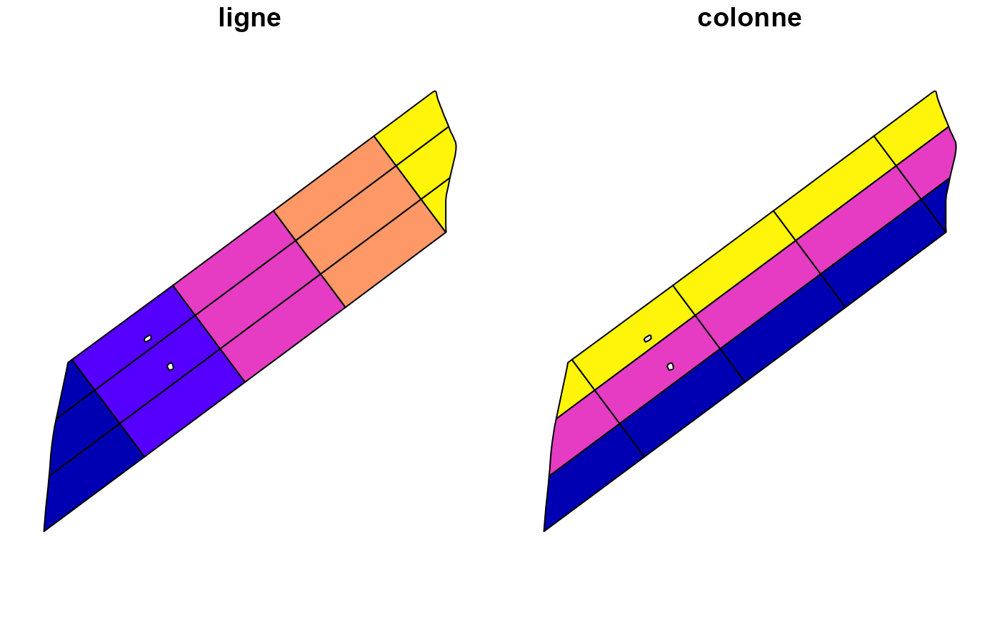
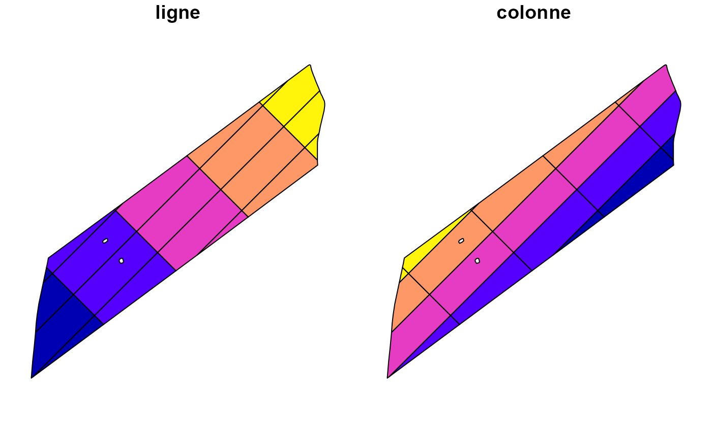
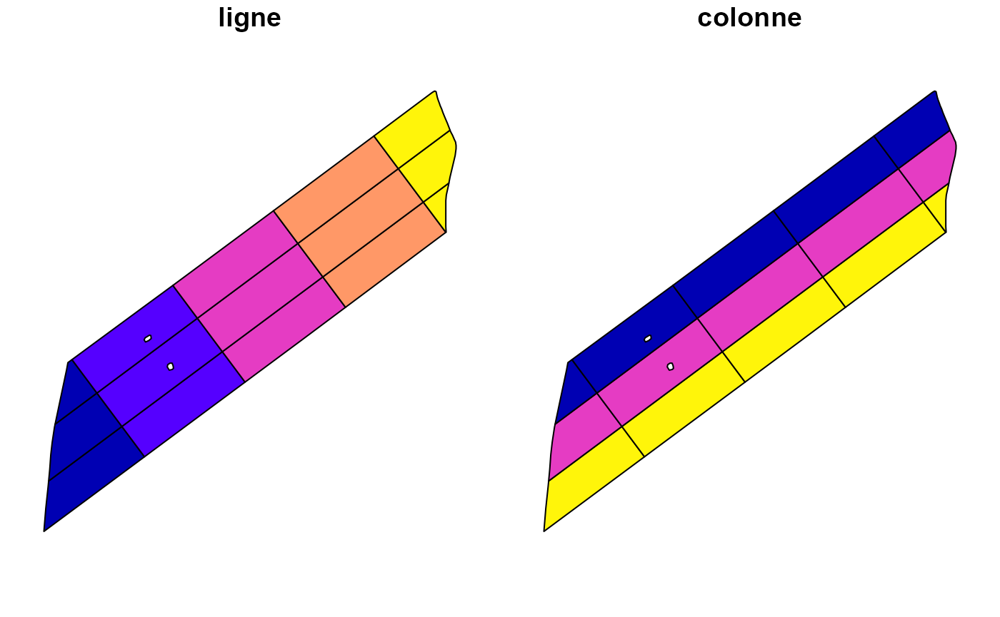
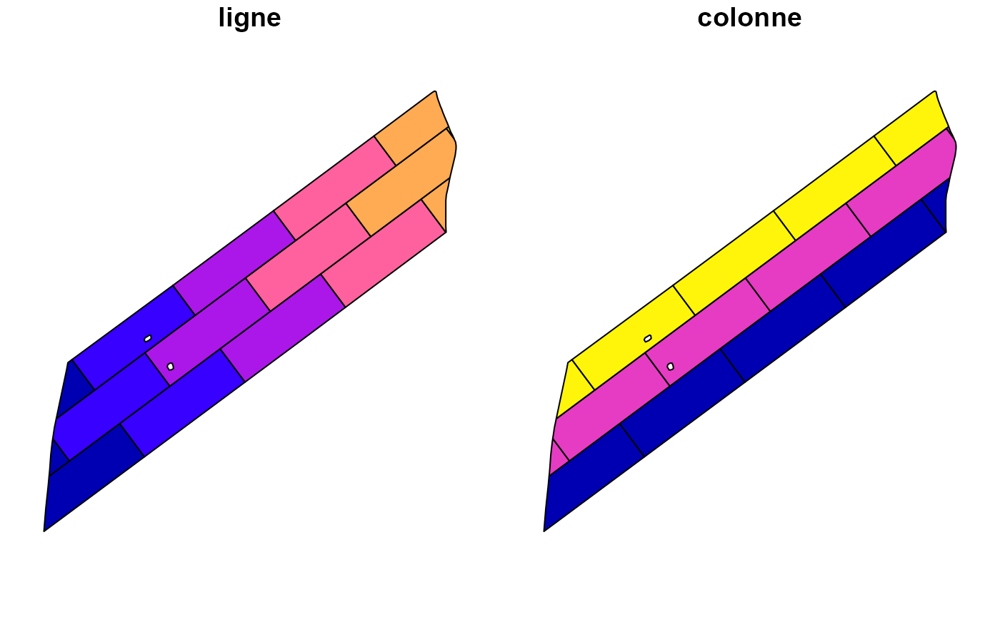
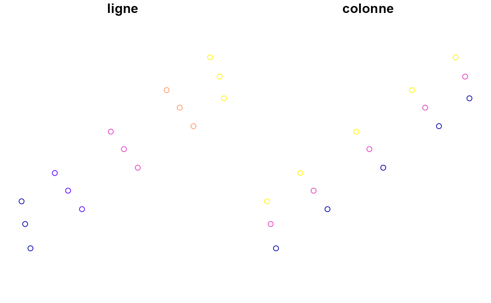

Grilles orientées en agriculture de précision
Grille.Rmd🎯 Objectif
Les grilles orientées sont un outil essentiel pour organiser l’espace agricole en unités d’échantillonnage, de traitement ou d’observation. Elles facilitent la planification des opérations sur le terrain en suivant l’orientation dominante des champs.
🗂️ Exemple 1 : Grille de base avec orientation automatique
Ce premier exemple génère une grille avec largeur et longueur spécifiées. L’orientation est déduite automatiquement selon l’axe dominant du champ.
champ <- champs_exemple |> dplyr::slice(1) |> sf::st_sf() |> st_utm()
#> although coordinates are longitude/latitude, st_union assumes that they are
#> planar
#> Warning in st_centroid.sfc(sf::st_transform(sf::st_union(x), 4326)):
#> st_centroid does not give correct centroids for longitude/latitude data
grille1 <- st_grille(champ, largeur = 100, longueur = 300)
#> Warning: attribute variables are assumed to be spatially constant throughout
#> all geometries
plot(grille1)
📌 Utilisation typique : structuration régulière pour un plan d’échantillonnage ou une prescription uniforme.
🔄 Exemple 2 : Grille avec angle spécifié manuellement
On peut forcer un angle d’orientation personnalisé, par exemple pour s’aligner sur une route ou une structure de drainage existante.
grille2 <- st_grille(champ, largeur = 100, longueur = 300, angle = 45)
#> Warning: attribute variables are assumed to be spatially constant throughout
#> all geometries
plot(grille2)
📐 Permet d’ajuster l’alignement à une infrastructure réelle, même si elle ne correspond pas à l’orientation naturelle du champ.
📍 Exemple 3 : Grille numérotée depuis un coin spécifique
On peut choisir le coin d’origine de la numérotation
(SO, NO, SE, NE).
Ici, l’origine est en coin nord-ouest.
grille3 <- st_grille(champ, largeur = 100, longueur = 300, coin = "NO")
#> Warning: attribute variables are assumed to be spatially constant throughout
#> all geometries
plot(grille3)
🧭 Utile pour aligner la grille à la logique opérationnelle du producteur (ex. : toujours commencer au coin nord-ouest).
➕ Exemple 4 : Grille en quinconce
Le mode quinconce = TRUE décale une ligne sur deux
horizontalement, ce qui permet une couverture plus uniforme dans
certains cas (ex. : échantillonnage représentatif).
grille4 <- st_grille(champ, largeur = 100, longueur = 300, quinconce = TRUE)
#> Warning: attribute variables are assumed to be spatially constant throughout
#> all geometries
plot(grille4)
🔘 Exemple 5 : Extraire les centroïdes au lieu des polygones
Si points = TRUE, la grille retourne des points
(centroïdes) plutôt que des polygones.
grille_pts <- st_grille(champ, largeur = 100, longueur = 300, points = TRUE)
#> Warning: attribute variables are assumed to be spatially constant throughout
#> all geometries
#> Warning: st_centroid assumes attributes are constant over geometries
plot(grille_pts)
🎯 Adapté pour un échantillonnage ponctuel ou la définition de points de contrôle GPS.